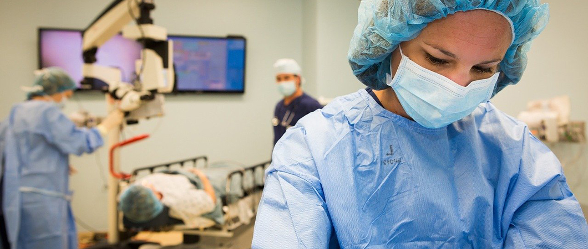

Vision correction
The world has recently seen an enormous increase in demand for refractive laser surgery, a surgical technique that uses lasers to correct refractive vision problems, as this technique has provided an easy solution for those who find wearing eyeglasses or contact lenses annoying
Vision correction
Over the last few years, the world has seen an enormous increase in demand for refractive laser surgery. A relatively new surgical technique that uses lasers to correct refractive errors of vision, as these new techniques has provided an alternative for traditional glasses and contact lenses used to treat refractive errors, such as: myopia and hyperopia, and astigmatism.
What Is Laser Refractive Surgery?
Laser refractive surgery is a surgical technique in which a special cutting laser is used to redesign the shape of the cornea to correct problems of far-sightedness, myopia or astigmatism, which are collectively called refractive errors of vision.
In the normal vision, the cornea and the lens of the eye can focus light in proportion with the depth of the eyeball, meaning that light rays fall directly on the retina after going through the cornea and the lens.
What Are Refractive Errors?
Nearsightedness (myopia): In this case, distant objects cannot be clearly seen, because light entering the eye is focusing in front of the retina and not on the retina itself.
Hyperopia (farsightedness): in hyperopia far objects can be seen better than near objects, but the vision is generally blurry, and this occurs when the lens cannot adjust its focusing power or when the eyeball is short in length.
Astigmatism: in astigmatism the eye has difficulty focusing light on one point in the retina, so that things appear blurry from all distances, and this problem usually accompanies nearsightedness or farsightedness.
Presbyopia is an age-related change in the lens structures, usually begins at the age of forty, when the lens of the eye loses its ability to adjust its convexity due to its increased rigidity.
How Is Refractive Error Treated?
It is known that eye refractive errors have been traditionally treated with different kinds of corrective lenses, but this has changed with the emergence of laser refractive surgery as it offered a safe and reliable alternative to wearing eyeglasses and lenses.
There are different types of lenses and surgical techniques to be used in the treatment of refractive errors, these include the following
Corrective Lenses
It is the old and traditional method for treating refractive errors in the eye, as a concave lens is used to treat nearsightedness to help focus light on the retina better. In cases of hyperopia, convex lenses are used to correct the refractive error, and cylindrical lenses are used to help in cases of astigmatism.
Surgical Treatment
Laser eye surgery: These are surgical procedures that are performed using lasers to reshape the cornea, to correct refractive vision problems, such as near-sightedness, far-sightedness and astigmatism, to eliminate the need for glasses and contact lenses.
The type of surgery to be used to treat the refractive defect is chosen to accord with the patient’s problem and corneal measurements.
The selection of the right surgery for the right patient is considered the most important element for the success of the surgery, besides that the eye should be free of any problems other that refractive errors, and these refractive errors must show stability over time for a period that exceeds a year, all these factors play a part in how successful the surgery will be.
Some factors can make laser eye surgery inappropriate or contraindicated for some patients such as, some autoimmune diseases, chronic use of some medications, or dry eye.
Before the procedure, the surgeon assesses the patient's condition, considering the following points:
- General evaluation of the patient's health condition
- Slit-lamp eye examination
- Determining the corneal topography and thickness
- Fundus examination
- Assessing tear production
- Intraocular pressure measurement

What Are the Complications Of Laser Eye Surgery?
Eye laser surgery are categorized as safe procedures with few complications, as studies conducted to follow up patients have shown high patient satisfaction after the procedure, and most patients involved in these studies no longer needed to use glasses or lenses after the surgery. Lasik vision correction surgery is the safest yet effective procedure in Ophthalmology.
Complications from LASIK eye surgery are extremely rare, estimated to be less than 1 percent. FDA approved LASIK for anyone 18 years or older, but since adult vision is typically at its healthiest from age 19 to 40, people within this range are perfect candidates. Laser vision correction is an alternative to eyeglasses and contact lenses that can help you see better, naturally.
The concept behind laser vision correction is reshaping the front of the eye (Cornea) to change its focusing power.
These elegant procedures are safe and effective with the right patient. Laser eye surgery, or laser vision correction, involves using lasers to reshape the front surface (cornea) of your eyes so you’re your eyes focus better.
It can correct short-sightedness, long-sightedness, and astigmatism. The cost of vision correction varies according to the condition and the technique used for the treatment, generally cost range from 1,000 euros to 2,500 euros. LASIK (Laser In-situ Keratomileusis).
Makes up 90% to 95% of all laser vision correction surgery.
Ilajak Medical seeks the best options for you according to requirements and expectations. PRK (Photorefractive Keratectomy) is a laser eye surgery that corrects refractive vision errors by changing the cornea shape.
The cornea is responsible for refracting light toward the center of the retina, and refractive errors happen when the shape of the cornea causes the refraction to be off-center. The specialist who correct vision problem with spectacle lenses is called: Optometrist.
Do you have an inquiry? Contact us - For FREE Consultation.
laser vision FAQ
Ilajak Medical© | A passion for care

LASIK Surgery for eyes
Laser-Assisted in Situ Keratomileusis (LASIK) has become the most commonly performed procedure among laser eye surgeries for correcting refractive vision problems, as it actually represents an effective treatment for myopia, farsightedness and astigmatism.
Read more..
Femto-LASIK
The FemtoLASIK procedure is used to correct vision problems of myopia and farsightedness in all degrees, from mild, moderate to very severe, whether accompanied by astigmatism or not.
Read more..
SMILE Eye Surgery
<div>Smile is the latest version of laser refractive eye surgery, and it involves making a very small incision at one end of the cornea using a femtosecond laser.</div>
Read more..